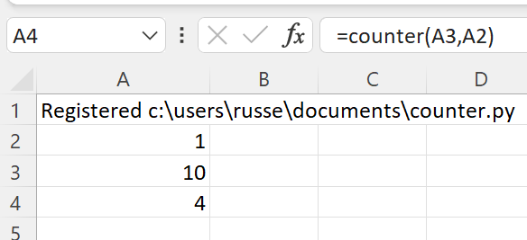
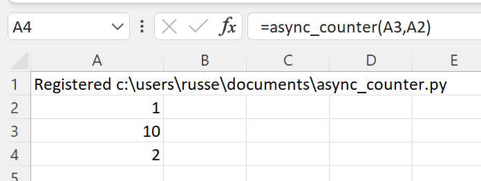

Streaming data¶
xlSlim makes it easy to stream data into Excel. Technically this is done using a standard Excel interface called IRTDServer, however xlSlim hides all the complexity from you. If you can write a Python generator function then you can stream data into Excel. A Python generator function is a special kind of function that returns a lazy iterator, see PEP 255 for their details.
Note
xlSlim uses standard Python generator functions and iterator classes to stream data into Excel. A significant benefit of this implementation is that code can be independently tested in Python IDEs, notebooks, etc. If your iterator works in Python it will work exactly the same way running within xlSlim.
Simple Generator Functions¶
This Python code defines a generator function counter() that yields a sequence of integers from 0 to the stop value at a specified rate of updates_per_second:
import time
def counter(stop: int, updates_per_second: int) -> int:
"""Generates a sequence of numbers up to stop at a rate of updates_per_second."""
for i in range(stop):
time.sleep(1.0 / updates_per_second)
yield i
Note
All the Python code and Excel files shown are available from github in the xlslim-code-samples repo. I highly recommend downloading the samples from github. The Excel workbooks contain many tips and tricks.
Save the Python code as a new file on your PC. I saved the file in my Documents folder.
Open Excel and enter this RegisterPyModule() formula (amending the location to match where you saved the file):
=RegisterPyModule("c:\users\russe\documents\counter.py")
If we call the counter() function in cell A4 with a stop value of 10 and an updates_per_second value of 1 we see values from 1 to 9 updating every second in Excel.
{kind=link}
Note
Set Excel’s Calculation Options to Automatic to see the value ticking. The functionality works perfectly in Manual calculation mode too, the value shown updates every time you press F9. Note that the generator function runs in an independent background thread so runs regardless of Excel’s calculation mode.
That is a very simple example of just how easy it is to stream data into Excel! Try different update rates to see how quickly xlSlim can feed data from Python into Excel. On a fast desktop you should be able to reach about 40 messages per second. You can generate data with a higher frequency, however Excel throttles the rate at which it accepts updates. Excel’s update throttle is controlled by the ThrottleInterval setting. This can be set in the VBA immediate window:
Application.RTD.ThrottleInterval = 0
Asynchronous Simple Generator Functions¶
In recent years Python has introduced support for writing concurrent code using the async/await syntax. The asyncio library provides the foundations.
Asynchronous code is faster and more efficient, especially if blocking IO is involved. Almost any use case for streaming data into Excel will source the data from another system, message bus, or data provider, therefore please use async packages and code whenever possible.
xlSlim fully supports async generator functions. This Python code defines an async generator function async_counter() that is the async version of the previous counter() function:
import asyncio
async def async_counter(stop: int, updates_per_second: int) -> int:
"""Asynchronously generates a sequence of numbers up to stop at a rate of updates_per_second."""
for i in range(stop):
await asyncio.sleep(1.0 / updates_per_second)
yield i
After saving the code and registering the module, the async_counter() runs identically to the counter(), however it is faster and more efficient:
{kind=link}
Iterator classes¶
Generator functions are a convenient and easy way to create iterators. Sometimes you need more control over the finer details of how the iterator behaves, iterator and asynchronous iterator classes provide more control.
This code shows the same counters implemented as iterator classes:
import time
import asyncio
class CounterClass:
def __init__(self, stop: int, updates_per_second: int) -> None:
"""Generates a sequence of numbers up to stop at a rate of updates_per_second."""
self._stop = stop
self._updates_per_second = updates_per_second
self._i = 0
def __iter__(self):
return self
def __next__(self) -> int:
if self._i >= self._stop:
raise StopIteration
time.sleep(1.0 / self._updates_per_second)
i = self._i
self._i += 1
return i
class AsyncCounterClass:
def __init__(self, stop: int, updates_per_second: int) -> None:
"""Asynchronously generates a sequence of numbers up to stop at a rate of updates_per_second."""
self._stop = stop
self._updates_per_second = updates_per_second
self._i = 0
def __aiter__(self):
return self
async def __anext__(self) -> int:
if self._i >= self._stop:
raise StopAsyncIteration
await asyncio.sleep(1.0 / self._updates_per_second)
i = self._i
self._i += 1
return i
xlSlim will register these classes as Excel functions with the class name as the Excel function name, so CounterClass() and AsyncCounterClass(). The type hints are taken from the __init__ and __iter__/__aiter__ methods. The doc string is taken from the __init__ method.
Streaming Python objects¶
xlSlim also allows Python objects to be streamed. You can stream numpy arrays, pandas dataframes or any other Python object. To illustrate this we can modify the previous counter examples to return 2x2 numpy arrays.
Warning
numpy functionality requires a premium licence. See Licensing
import time
import asyncio
import numpy as np
def array_counter(stop: int, updates_per_second: int) -> np.ndarray:
"""Generates a sequence of numpy arrays filled with numbers up to stop at a rate of updates_per_second."""
for i in range(stop):
time.sleep(1.0 / updates_per_second)
yield np.full((2, 2), i)
async def async_array_counter(stop: int, updates_per_second: int) -> np.ndarray:
"""Asynchronously generates a sequence of numpy arrays up to stop at a rate of updates_per_second."""
for i in range(stop):
await asyncio.sleep(1.0 / updates_per_second)
yield np.full((2, 2), i)
Save the Python code as a new file on your PC. I saved the file in my Documents folder.
Open Excel and enter this RegisterPyModule() formula (amending the location to match where you saved the file):
=RegisterPyModule("c:\users\russe\documents\array_counter.py","C:\Users\russe\anaconda3\envs\py37")
Note
numpy is not available in the Python installation bundled with xlSlim. The Python module must be registered with an existing Python installation that has numpy installed.
If we call the array_counter() function in cell A4 with a stop value of 10 and an updates_per_second value of 1 we see a cache handle updating every second in Excel. As usual the xlSlim function ViewPyObject() can be used to view any Python object stored in the memory cache.
=array_counter(A3,A2)
=ViewPyObject(A4)
{kind=link}
Allowed Function Parameters¶
xlSlim restricts the type of parameters you can pass into streaming data functions. Only simple types (numbers, strings and booleans) are allowed. Ranges of simple types are also allowed. This restriction ensures that the streaming data functions perform optimally.
Any supported xlSlim output type can be used, except for lists. Streaming data functions can only return a single value. If you need to return a list of values consider using a numpy array or creating multiple streaming data functions.
Examples¶
See Streaming from Kafka for an example streaming doubles from a Kafka topic.
- The GitHub repo xlslim-code-samples has further examples. Noteworthy examples are: